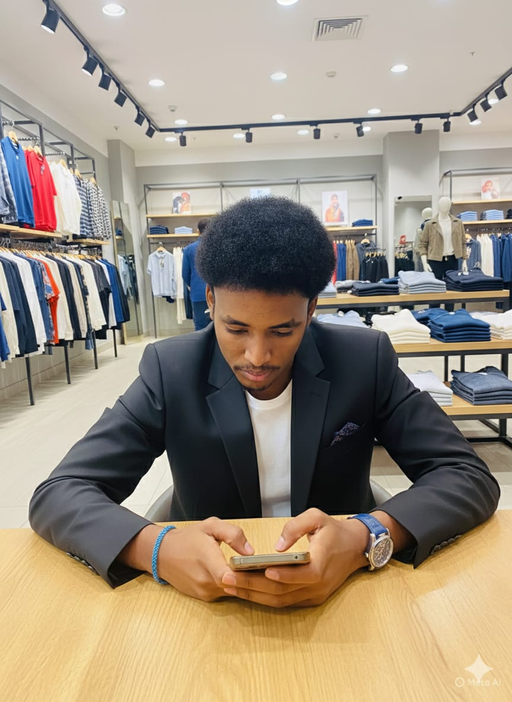

Born and raised in the dynamic commercial district of Eastleigh, Nairobi, Jimale Mohamed Nooor developed an early understanding of trade, textiles, and the rhythm of retail. Surrounded by one of Kenya’s most vibrant marketplaces, he learned how global fashion trends intersect with local entrepreneurship.
The vision for VaZi emerged from a bold ambition — to transform the raw commercial energy of Eastleigh into a refined, premium fashion experience. VaZi was built to bridge tradition and modern elegance, offering curated style for Nairobi’s ambitious and upwardly mobile generation.
As a leader, Jimale believes in agility, authenticity, and proximity to the customer. He maintains that staying connected to the street-level pulse of the city is the key to building a brand that remains relevant and respected.
Beyond VaZi, Jimale actively mentors emerging entrepreneurs within the Eastleigh business ecosystem, advocating for innovation, professionalism, and global competitiveness in Kenya’s fashion industry.